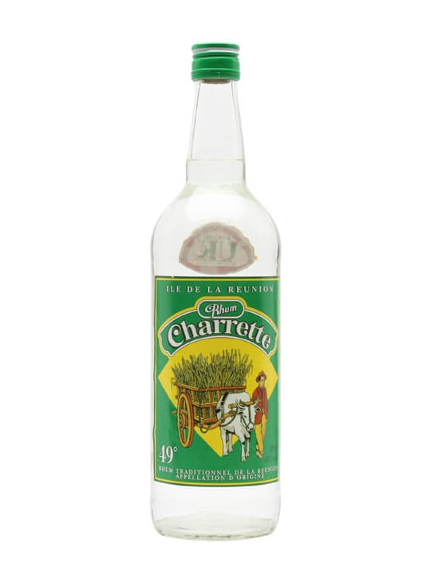

Décembre arrive toujours en fin d’année. C’est le mois des rétrospectives et des bilans, avant de repartir sur des bases nouvelles une fois la Saint-Sylvestre passée. Si nous devions faire une rétrospective 2006 pour Reunionweb, le redesign du site serait la principale nouvelle, mais je ne vais pas ne vais pas m’attarder là-dessus puisque je pense qu’il y a encore du travail...
Les rétrospectives arrivent parfois avec des récompenses, le meilleur de l’année est toujours très content de recevoir son prix. J’ai déjà parlé de Miss Réunion cette année mais d’autres concours, avec ou sans jolies filles ont lieu toute l’année.

C’est par exemple au printemps qu’à lieu le Concours Général Agricole,
pendant le salon de l’agriculture à Paris. 2006 a été une première
Réunionnaise puisque le rhum peï a gagné une médaille d’or à ce concours. En regardant de plus près, on voit que cette médaille concerne une catégorie (Rhums / Rhum blanc de la Réunion 50°) où le concurrent était le seul. À ce jeu là, il est très facile de gagner tellement il y a de catégories.
Le rhum Charrette qui remporte ainsi sa première médaille d’or du Concours Général n’en démérite pas pour autant, il a passé les sélections qui font que ce produit peut porter le label du Concours Général, signe de l’excellence agricole française.
C’est donc l’occasion rêvée pour vous présenter le site du rhum le plus célèbre de la Réunion. Et pour cause, cette marque est celle de la société Rhum Réunion qui exploite les trois seules distilleries de l’île. Quand on voit les champs de cannes à la Réunion, on est quasiment sûr de les voir finir dans une des bouteilles produites par cette société. Ce joli site (hélas tout en flash) présente la société Rhums Réunion et le rhum Charrette. Il donne aussi quelques infos sur les produits et des recettes à base de rhum. Mes préférées sont celles du rhum arrangé, très connues à la Réunion.
Le rhum prend ainsi le goût des divers fruits, épices et plantes qui sont déposés au fond de la bouteille. La variété ainsi créée remplace la variété de marques que l’on n’a pas à la Réunion. Cette variété crée vraiment une symphonie de goûts qui convient très bien aux fêtes... de fin d’année puisque c’est décembre. À consommer avec modération pendant les fêtes comme tout le reste.